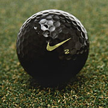

What started out as a simple promotion for a new product has created a buzz in the golf world and stir in the Nike headquarters in Oregon.
The new black golf ball from Nike is garnering more attention than the company expected.
Four PGA Tour golfers, all under contract to Nike, agreed to play a black golf ball on the par-3, 162-yard 16th hole at the TPC of Scottsdale, during the FBR Open last weekend in Arizona, to call attention to the new Nike Black One ball, which isn't totally black like the promotional ball.

None of the four, Stewart Cink, Justin Leonard, K.J. Choi or Rory Sabbatini, came close to a hole-in-one, but they got the effect Nike wanted with the promotion. The hole is similar to an amphitheater, with more than 7,000 mostly rowdy spectators watching. The combination of the odd black ball, the fans and the TV audience had phones ringing at the club during the tournament and at Nike headquarters Monday.
According to Nike spokesman Dean Stoyer, phone calls were coming in at a rate of 10 per hour. Customers wanted to know where they could buy the ball. By Monday afternoon, Nike execs were referring to the ball as the BOB — Black One Black. The original is the Black One, which is white with black markings to distinguish it from other Nike golf balls.
Stoyer said the ball is "difficult to see" should it be hit in the rough, so it was used on the par-3. Nike's executives hadn't anticipated the response, so the ball's future is being determined. The plan now is to offer The Black One Black in selected stores, giving it as a two-ball pack for anyone who buys a dozen Black One whites.
The ball meets all regulations of the U.S. Golf Association, but colored golf balls have not been popular in the marketplace. Orange and yellow balls were sold 25 years ago, and Jerry Pate used an orange ball made by Wilson to win the 1982 Players Championship. He says he would play one again if Titleist, which he represents today, would make one.